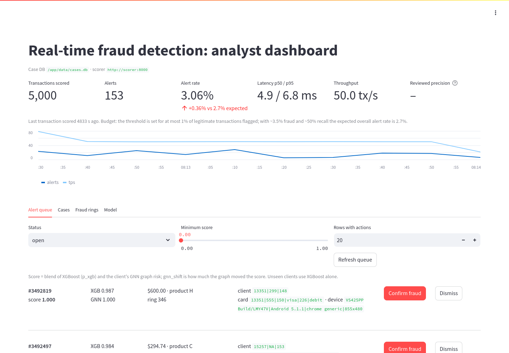
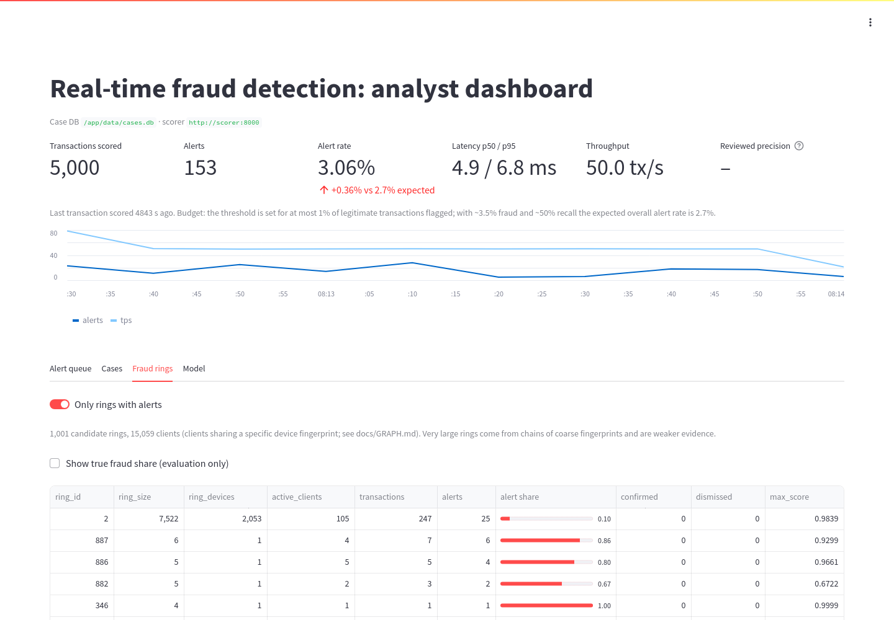

Analyst dashboard
Alerts, case status, feedback labels and the fraud-ring view

- Live overview (refresh 5 s): scored, alerts, alert rate vs the 1% budget, latency p50/p95, throughput, live precision
- Alert queue: sorted by score with the breakdown
p_xgb,gnn_risk,gnn_shift. Confirm / Dismiss stores the feedback label the monitor uses - Cases: open / confirmed / dismissed, live precision. Ground truth only in an "evaluation only" expander
- Fraud rings: rings seen in the stream; Graphviz view of clients, devices and cards (capped at 40 clients)
- Model:
/model,/health, consumer stage latencies
Query logic in fraud/dashboard_data.py (unit-tested); the app is smoke-tested with Streamlit's AppTest.


Sources: docs/DASHBOARD.md. Screenshots: docs/screenshots/ (to be captured from a live run)